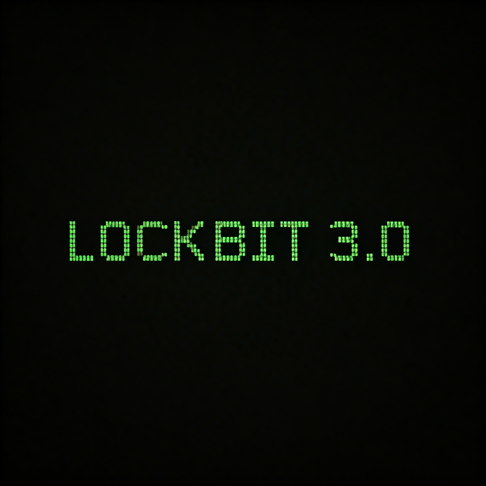

This is an analysis of malware for the LockBit 3.0 ransomware sample that was discovered on February 7, 2024. The YARA rules that are used for detection are included in the report. LockBit 3.0 represents a significant threat in the cybersecurity landscape, showcasing advanced capabilities and tactics. In this analysis, you can find the behavior and characteristics of LockBit 3.0, aiming to provide insights that can aid in defense and mitigation strategies against this malicious software. Let's examine this in more details.